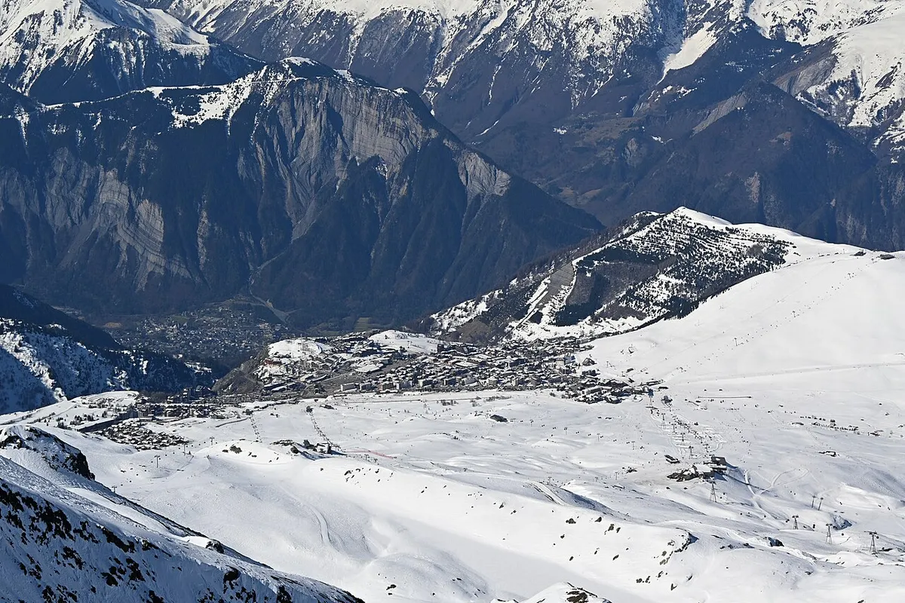
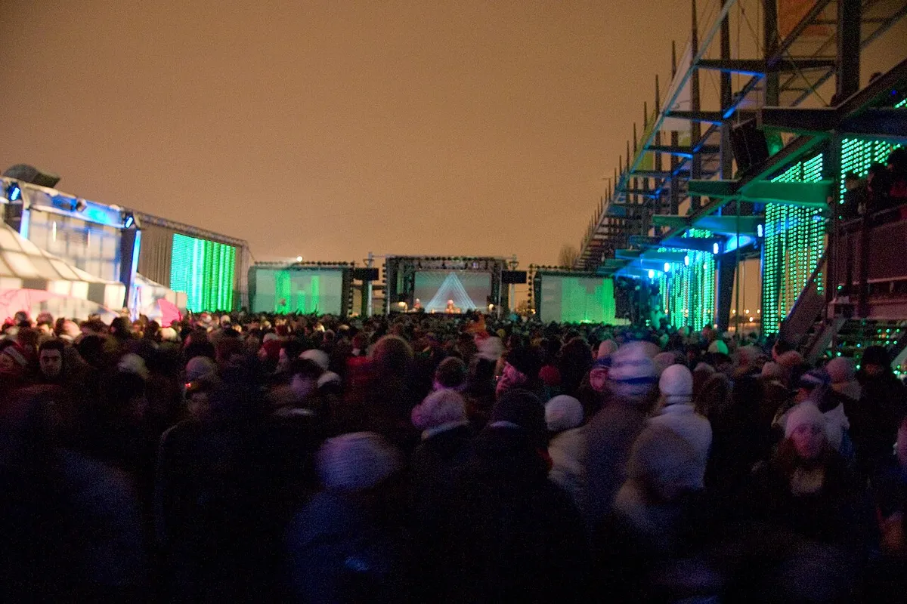
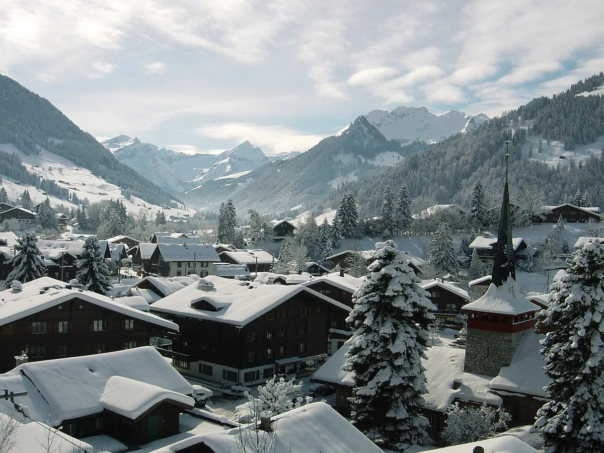
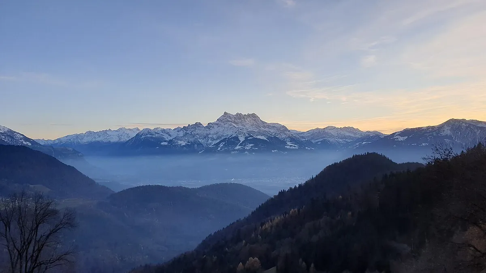

Festival guide, 2027
Best winter music festivals 2027
Which winter festivals are the biggest, which are best for house and techno on a mountain, and which the scene rates but few people search for, with every date marked confirmed or unconfirmed.
A different trip from a summer festival.
A winter festival is a different trip from a summer one. You are choosing a mountain resort, a cold waterfront or a city in January, and the music is one part of that choice. This page sorts the winter festivals by what they are for: the biggest names, the house and techno weeks on a mountain, and a short list that the electronic music press rates but few people search for.
How this list was chosen
A festival is on this list when it has electronic music at its core, runs between December and April, and has dates for its next edition. The first group is here because people search for it. The last group is here for a different reason: Resident Advisor, Pitchfork or The Quietus have covered it, and it has little search volume. A festival that could not be backed by an official page or a named review was cut.
Each entry says where the dates come from. "Confirmed" means the festival's own site shows them. "Listed" means a ticket seller, a listing site or the promoter's social account shows them and the festival's own site was stale or unreachable when it was checked.
Winter festival dates for 2027 at a glance
| Festival | Where | Dates | Source |
|---|---|---|---|
| Rise | Les 2 Alpes, France | 5 to 12 December 2026 | Listed |
| Contact Winter | Vancouver, Canada | 26 and 27 December 2026 | Listed |
| Igloofest | Montreal, Canada | 14 January to 6 February 2027 | Confirmed |
| CTM | Berlin, Germany | 22 to 31 January 2027 | Confirmed |
| Astropolis l'Hiver | Brest, France | February 2027, dates not announced | Unconfirmed |
| Nameless Winter | Barzio, Italy | 13 and 14 February 2027 | Listed |
| Snow Machine | Hakuba, Japan | 2 to 7 March 2027 | Listed |
| Elevate | Graz, Austria | 4 to 7 March 2027 | Confirmed |
| Caprices | Gstaad, Switzerland | 12 to 14 and 19 to 21 March 2027 | Listed |
| Shapes | Leysin, Switzerland | 15 to 21 March 2027 | Confirmed |
| Hibernation | Pas de la Casa, Andorra | 19 to 21 March 2027 | Listed, weak |
| Tomorrowland Winter | Alpe d'Huez, France | 20 to 27 March 2027 | Listed |
| Snowbombing | Mayrhofen, Austria | 5 to 10 April 2027 | Confirmed |
Which winter festivals are the biggest?
The biggest winter festivals are the ones with large production and a headline bill: Tomorrowland Winter and Snowbombing in the Alps, Igloofest in Montreal, Snow Machine in Hakuba and Nameless Winter in the Italian Alps. They are the answer to a search for the best winter music festivals if you want names you know.
Tomorrowland Winter, Alpe d'Huez
The winter edition of Tomorrowland is held at Alpe d'Huez in the French Alps, and the listing for 2027 gives 20 to 27 March. It has its own page on this site: see the Tomorrowland guide.

Snowbombing, Mayrhofen
Snowbombing is a ski and music festival in Mayrhofen, Austria, and its official core dates are 5 to 10 April 2027. It sells only weeklong packages that include accommodation and a wristband, and its 2027 bill includes Bicep, Fatboy Slim, Andy C and Wilkinson. The details of dates, tickets and the village are in the Snowbombing guide.
Igloofest, Montreal
Igloofest is an outdoor electronic festival at the Quai Jacques-Cartier in Montreal, and its own site gives 14 January to 6 February 2027. The festival also runs nights in other cities, with Edmonton listed for 4 to 6 March.

Snow Machine, Hakuba
The Snow Machine festival is held at the Hakuba ski area in Japan. The 2027 listing gives 2 to 7 March, with the main arena on 4 to 6 March.
Nameless Winter, Barzio
Nameless Winter is the winter edition of the Italian festival Nameless, held at Barzio in Lombardy. The listing gives 13 and 14 February 2027. Its programme is mainstream dance music.
Contact Winter, Vancouver
Contact Winter is held in Vancouver over the end of December, and the 2026 listing gives 26 and 27 December. It is the one entry here that falls before the new year, so for the rest of the holiday week see the New Year's Eve festivals guide.
Which winter festivals are best for house and techno on a mountain?
Hibernation, Caprices and Shapes are the three to look at if you want ski music festivals with a house and techno focus. They are smaller than the festivals above, and each one is built around a venue in a resort town rather than a stage on a slope.
Hibernation, Pas de la Casa
The Hibernation festival is held at Pas de la Casa in Andorra, and the 2027 edition is listed for 19 to 21 March as its tenth. Treat the dates with care. The festival's own site showed old dates when it was checked on 4 October 2026, and 19 to 21 March rests on the promoter's Instagram, Shotgun and a festival listing.
Caprices, Gstaad
Caprices Festival describes itself as electronic music in extraordinary locations, and the 2027 winter edition in Gstaad is listed for 12 to 14 and 19 to 21 March. Resident Advisor reported the winter dates on 9 December 2025.

Beatport streamed a set from Caprices in 2021, which is the closest thing to a preview.
Shapes, Leysin
Shapes holds its festival in the Swiss resort of Leysin, and its own site gives 15 to 21 March 2027 and sells passes and packages. Resident Advisor put it in its Top Ten festivals of March in both 2024 and 2025.

Which winter festivals does the scene rate but few people search for?
CTM, Elevate, Rise and Astropolis l'Hiver are the ones that the specialist press covers and the search tools hardly measure. You will not find them on a list of the best winter festivals by volume. They are here because the music press keeps coming back to them.
CTM, Berlin
CTM is Berlin's festival for adventurous music and art, and its own site gives its 28th edition as 22 to 31 January 2027, under the title Process…ing. Resident Advisor reviewed it in 2013 and named it in a Top Ten for January 2024, and Pitchfork has covered it.
Elevate, Graz
Elevate is a festival of music, art and political discourse in Graz, Austria, and its site gives 4 to 7 March 2027. The Quietus and Resident Advisor have both covered it.
Rise, Les 2 Alpes
Rise opens the 2026 to 2027 winter, so it is a December festival in a guide to 2027. It is listed for 5 to 12 December 2026 at Les 2 Alpes in France, and the listing described it as 99 percent sold out. Resident Advisor named it in a Top Ten for December 2025.
Astropolis l'Hiver, Brest
Astropolis is the Brest electronic festival, and its winter edition is held in February. The festival's own pages had not confirmed the dates of the 14th edition when they were checked on 4 October 2026, so no day is printed here. This page is updated once Astropolis announces them.
How to choose
Choose by what you want from the trip. For the biggest names and a ski holiday, choose Tomorrowland Winter or Snowbombing. For a city festival that you can do in a weekend, choose Igloofest or CTM. For house and techno in a resort town, choose Shapes, Caprices or Hibernation. For talks and art beside the music, choose Elevate.
Check the source column before you book. Five festivals had dates confirmed on the festival's own site on 4 October 2026, and the rest should be checked against the festival before you buy travel. For summer plans, see the best electronic music festivals in Europe.
To hear what these crowds dance to, the Selector plays a DJ set at random.
Winter music festivals FAQ.
What are the best winter music festivals?
For the biggest names, Tomorrowland Winter, Snowbombing, Igloofest and Snow Machine. For house and techno on a mountain, Shapes, Caprices and Hibernation. For a festival the specialist press rates and few people search for, CTM, Elevate and Rise.
Are there winter festivals in Europe for electronic music?
Yes, mostly in the Alps. Tomorrowland Winter at Alpe d'Huez, Snowbombing at Mayrhofen, Shapes at Leysin, Caprices at Gstaad, Hibernation at Pas de la Casa and Rise at Les 2 Alpes are all held in the Alps or Pyrenees. Elevate is in the Austrian city of Graz, and CTM is in Berlin.
Is there a rave in the snow?
Yes. For a winter rave in the snow, Snow Machine in Hakuba, Nameless Winter in Barzio and Snowbombing in Mayrhofen are held in ski resorts. Igloofest is an outdoor party on a Montreal quay in January.
When is Tomorrowland Winter 2027?
The listing for 2027 gives 20 to 27 March at Alpe d'Huez. The Tomorrowland guide covers the festival.
When is Snowbombing 2027?
5 to 10 April 2027 in Mayrhofen, Austria, according to the festival's FAQ. See the Snowbombing guide for tickets and the line-up.
Sources.
- Confirmed dates, read on 4 October 2026: Igloofest, CTM Festival, Elevate, Shapes and Snowbombing.
- Listed dates (festival sites, ticket sellers and promoter pages, with a second source for each): Tomorrowland Winter, Snow Machine, Nameless Winter, Caprices, Hibernation, Rise and Contact Winter.
- Press coverage of the quieter picks: Resident Advisor (CTM, Elevate, Shapes, Rise, Caprices), Pitchfork (CTM) and The Quietus (Elevate).
Continue reading
Read next.
 Rave spots~11 min read
Rave spots~11 min readBest Clubs in NYC: Nightclubs for House and Techno, Then and Now
Nowadays, Basement, Public Records, Good Room and Elsewhere: the best clubs in NYC for house and techno now, and the history from the Loft to Output.
Read article → Rave spots~7 min read
Rave spots~7 min readBest Clubs in Tokyo: WOMB, Contact and the Ban on Dancing
WOMB, Contact, Vent and Circus Tokyo: the best clubs in Tokyo for house, techno and bass music, and the 68-year law against dancing that shaped them.
Read article → Rave spots~6 min read
Rave spots~6 min readBest Clubs in Budapest: A38, Instant-Fogas and Turbina
A38's converted cargo ship, the seven rooms of Instant-Fogas and Turbina's techno nights: the best clubs in Budapest now, and the ruin bars several grew out of.
Read article → Rave spots~6 min read
Rave spots~6 min readBest Clubs in Prague: Cross Club, Karlovy Lázně and Ankali
Cross Club's salvaged machinery, Karlovy Lázně's five floors and Ankali's techno nights: the best clubs in Prague, mainstream and underground.
Read article →